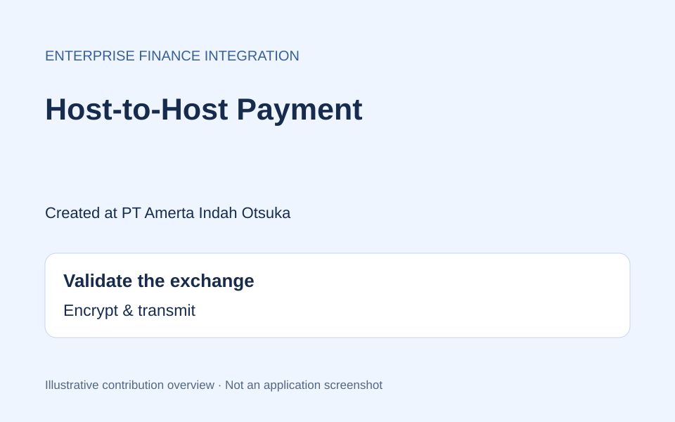

Host-to-Host Payment at PT Amerta Indah Otsuka
I created the host-to-host payment integration connecting SAP with partner banks. The work covers payment-data validation, encryption and transmission of outbound files, processing of incoming encrypted files, and logging and notifications around the exchange.
The business need
Payment exchange crosses a system boundary. Preparing an outbound file and receiving a bank response are separate events, and the application needs to retain the context of each step for the people following the transaction flow.
Project focus
- SAP payment-data integration
The application receives the relevant payment information from SAP for the exchange workflow.
- Validation and protected file exchange
Payment information is validated before encryption and transmission. Incoming bank files have a corresponding decryption path.
- Logging and notifications
Exchange activity is recorded and communicated so the involved business users can follow the integration flow.
How the workflow connects
The diagram explains business responsibilities and information flow, rather than the former company’s internal deployment.
My contribution
I created the application integration around SAP payment information and bank file exchange, including validation, encryption/decryption handling, logging, and notifications.
Functional architecture
SAP provides the enterprise payment information, the integration service prepares and processes the exchange, and the partner bank supplies the external interface and response. The application connects those responsibilities without treating file transmission alone as proof of a completed payment.
Experience & lessons
The project demonstrates my experience integrating a business-critical financial process across enterprise and external systems. The engineering lesson is to retain the distinction between data preparation, exchange, response processing, and business confirmation.